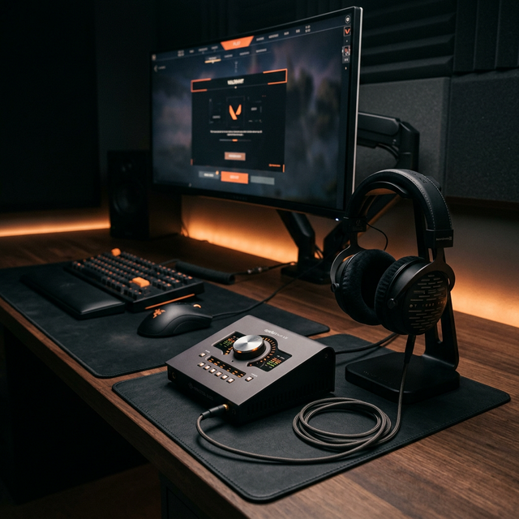
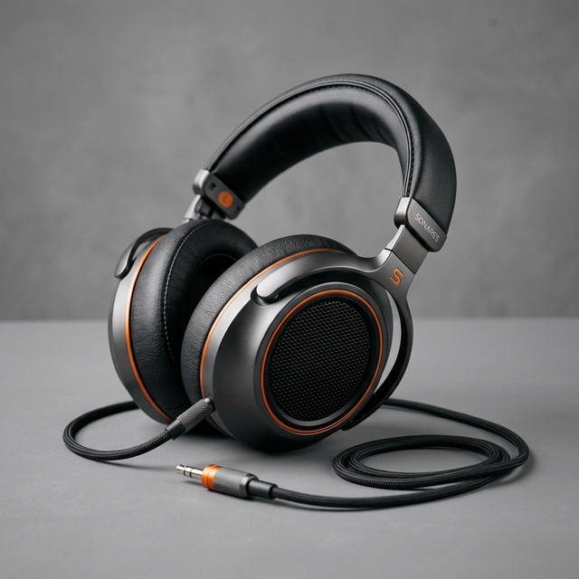
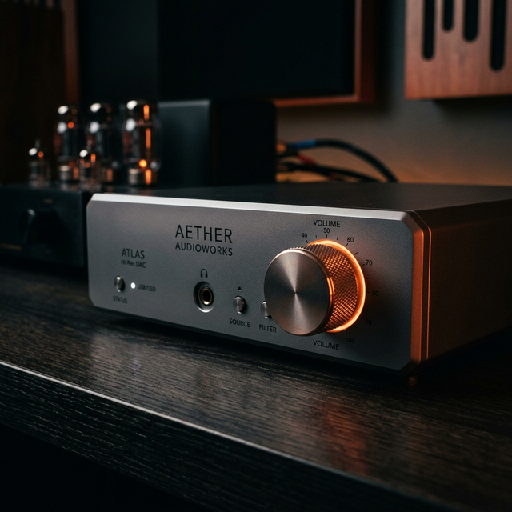

Guida al setup audio competitivo
Trasforma il tuo audio in un vero e proprio vantaggio tattico.
#
Parte 1 – Ripulire il segnale (prima ancora dell’hardware)
Quando si parla di audio competitivo, la maggior parte delle persone parte completamente dal punto sbagliato.
Si pensa subito alle cuffie, al DAC, alla scheda audio “da pro”, magari a qualche setup visto su YouTube con mille manopole sulla scrivania. È una reazione normale: vedi qualcuno che gioca ad altissimo livello e cerchi di replicarne l’attrezzatura.
Il problema è che, nella maggior parte dei casi, l’hardware non è il collo di bottiglia.
Quello che rovina davvero l’audio è tutto ciò che sta in mezzo tra il gioco e le tue orecchie: Windows, i driver, i software della scheda madre, gli effetti “migliorativi” che nessuno ha mai chiesto ma che sono attivi di default. È una catena invisibile che modifica continuamente il segnale, spesso con l’obiettivo di renderlo più “bello”, più pieno, più cinematografico.
E nel gaming competitivo, questa è esattamente la cosa peggiore che possa succedere.
Perché tu non vuoi un audio bello.
Vuoi un audio preciso.
Vuoi sentire un passo e sapere esattamente:
- da dove arriva
- a che distanza è
- su che superficie si muove il nemico
E per arrivare a quel livello di precisione, il primo passo non è aggiungere qualcosa, ma togliere.
Il punto di partenza è sempre Windows, perché è lì che iniziano le prime alterazioni del segnale. Anche con un sistema completamente “pulito”, senza software strani installati, il sistema operativo e i driver della scheda madre tendono comunque ad applicare una serie di modifiche automatiche. Non sono pensate per il competitivo: sono pensate per far suonare meglio musica, film, contenuti generici.
Il risultato è un audio più pieno, sì, ma anche più confuso.
La prima cosa che vale la pena sistemare è la frequenza di campionamento. È una di quelle impostazioni che quasi nessuno tocca, e proprio per questo spesso rimane configurata male. Windows ti permette di scegliere diversi formati, ma quello che vuoi impostare è 48.000 Hz, con la profondità in bit più alta disponibile, tipicamente 24 o 32 bit.
Non è una scelta casuale. I giochi moderni lavorano quasi sempre a 48 kHz, quindi usare un valore diverso costringe il sistema a fare una conversione continua del segnale. Non è qualcosa che “rompe” l’audio, ma è un passaggio in più che non ti serve. Ogni passaggio aggiuntivo è una possibilità in più di perdere precisione, e nel competitivo anche differenze minime possono accumularsi.
Sistemata questa base, si arriva a uno degli elementi più sottovalutati in assoluto: i cosiddetti “miglioramenti audio”.
Il nome è già fuorviante, perché dà l’idea che attivarli sia sempre una buona cosa. In realtà, per il gaming competitivo, è esattamente il contrario. Questi miglioramenti includono una serie di elaborazioni automatiche — equalizzazione, compressione, effetti spaziali — spesso implementate direttamente dai driver della scheda madre.
Il problema non è solo che modificano il suono, ma che lo fanno in modo poco trasparente. Non sai esattamente cosa stanno cambiando, né con quale intensità. E soprattutto, non sono progettati per aiutarti a localizzare un nemico in un FPS.
Quello che fanno, nella pratica, è “colorare” l’audio. Lo rendono più piacevole, più pieno, a volte più impressionante… ma meno affidabile. Le direzioni diventano meno nette, i dettagli più sottili vengono mascherati, e i passi — che sono proprio il tipo di suono che ti interessa — perdono definizione.
Per questo motivo, la scelta migliore è semplicemente disattivarli completamente. È uno di quei casi in cui togliere qualcosa migliora immediatamente il risultato.
Subito dopo viene un altro grande classico: l’audio spaziale di Windows, come Windows Sonic o Dolby Atmos a livello di sistema. Anche qui, l’idea è allettante. Più “3D”, più immersivo, quindi automaticamente migliore… giusto?
Non proprio.
I giochi competitivi moderni hanno già un loro sistema di audio spaziale integrato, progettato appositamente per funzionare con il motore del gioco. È quel sistema che calcola in tempo reale la posizione dei suoni nello spazio: davanti, dietro, sopra, sotto.
Quando attivi anche l’audio spaziale di Windows, succede una cosa molto semplice ma molto dannosa: stai applicando un secondo livello di elaborazione sopra qualcosa che è già stato elaborato.
È come prendere un’immagine già nitida e passarla di nuovo attraverso un filtro. Il risultato non è più preciso, è più confuso. Le direzioni diventano meno definite, i suoni si “allargano” nello spazio e perdono quel bordo netto che ti serve per capire esattamente dove si trova un nemico.
Per questo, anche qui, la scelta migliore è controintuitiva ma efficace: disattivare tutto.
Se c’è una cosa da portarti via da questa prima parte, è questa:
più il segnale audio è semplice e diretto, meglio è.
Ogni filtro, ogni effetto, ogni “miglioria” aggiunge complessità. E ogni livello di complessità è un potenziale errore in più tra te e l’informazione che ti serve davvero.
Prima di pensare a migliorare l’audio, devi riportarlo a uno stato neutro. Solo a quel punto ha senso costruirci sopra.
Parte 2 – Dentro al gioco: dove si vince davvero
Una volta che hai ripulito il segnale a livello di sistema, succede una cosa interessante: l’audio smette di “combatterti contro”.
A questo punto non hai più filtri strani, effetti nascosti o doppie elaborazioni che alterano il suono. Hai qualcosa di molto più semplice, molto più diretto. Ed è proprio qui che inizia la parte che fa davvero la differenza: le impostazioni in-game.
È anche il punto in cui molti fanno un altro errore classico. Aprono YouTube, cercano “audio settings pro player”, copiano uno screenshot e fine. Il problema è che quelle impostazioni funzionano per quella persona, con quel gioco, con quelle cuffie. Senza capire cosa stai facendo, stai solo replicando numeri.
Qui invece l’obiettivo è diverso: capire perché certe scelte funzionano.
La prima cosa da sistemare è anche la più banale, ma sorprendentemente spesso viene ignorata: il rapporto tra gli elementi audio.
Nei giochi competitivi, non tutti i suoni hanno lo stesso valore. Alcuni sono puro “rumore”, altri sono informazione critica. La musica, per esempio, rientra quasi sempre nella prima categoria. Può essere bella, immersiva, utile in single player… ma in competitivo occupa esattamente le stesse frequenze dei passi e di tanti altri suoni importanti.
Il risultato è che li copre.
Per questo motivo, la scelta più efficace è drastica ma semplice: musica a zero. Non “più bassa”, non “al 20%”. Zero. Tagli completamente una fonte di interferenza.
All’opposto, gli effetti sonori — quelli che includono passi, ricariche, movimenti, abilità — devono essere sempre la priorità assoluta. Sono loro che contengono l’informazione che ti fa vincere uno scontro.
Fin qui può sembrare ovvio, ma la vera differenza arriva con un’impostazione che molti vedono senza capirla davvero: la gamma dinamica.
Quasi tutti i giochi offrono diverse modalità audio: “Cuffie”, “Home Theater”, “Cinema”, a volte “Low Dynamic Range”. A prima vista sembrano solo opzioni legate alla qualità o al tipo di impianto, ma in realtà cambiano qualcosa di molto più importante: il modo in cui i volumi vengono distribuiti.
In un mix “cinematografico” o “home theater”, l’audio ha una gamma dinamica ampia. Questo significa che:
- i suoni forti diventano molto forti (esplosioni, spari)
- i suoni deboli restano molto deboli (passi, movimenti lontani)
È perfetto per un film. Ti dà impatto, profondità, spettacolarità.
Ma nel competitivo è un disastro.
Perché mentre senti benissimo un’esplosione, rischi di non percepire affatto un nemico che si sta muovendo dietro di te.
E qui entra in gioco la modalità che ti interessa davvero: cuffie oppure bassa gamma dinamica (Low Dynamic Range).
Queste modalità fanno una cosa molto precisa: comprimono il range dinamico. In pratica avvicinano i volumi tra loro:
- abbassano leggermente i suoni troppo forti
- alzano quelli più deboli
Il risultato è controintuitivo ma potentissimo. L’audio diventa meno “spettacolare”, meno cinematografico… ma molto più leggibile.
I passi emergono. I piccoli dettagli diventano percepibili anche in mezzo al caos. Non devi più alzare il volume per sentire qualcosa di lontano e poi abbassarlo perché un’esplosione ti spacca le orecchie.
È uno dei cambiamenti più sottovalutati, ma anche uno di quelli che fanno più differenza immediata.
A questo punto inizi a capire un pattern che si ripete: tutto ciò che rende l’audio più “bello” tende a renderlo meno utile.
Il competitivo funziona al contrario. Vuole togliere enfasi, togliere spettacolo, togliere dinamica… per lasciare spazio all’informazione pura.
Ed è anche il motivo per cui molte persone, quando provano per la prima volta queste impostazioni, hanno una reazione strana. Dicono che l’audio sembra “piatto”, meno coinvolgente, quasi peggiore.
In realtà non è peggiore. È più onesto.
E dopo un po’, quando inizi a notare che senti i nemici prima, che capisci meglio le distanze, che reagisci più velocemente… non torni più indietro.
Parte 3 – Equalizzazione: far emergere i passi senza rovinare l’audio
Arrivati a questo punto hai già fatto qualcosa che la maggior parte dei giocatori non fa mai: hai tolto di mezzo tutto ciò che distorce il segnale e hai impostato il gioco in modo che l’audio sia leggibile.
Eppure, anche così, c’è ancora margine di miglioramento. Perché ogni cuffia ha un suo “carattere”, una sua firma sonora. E quella firma, molto spesso, non è pensata per il competitivo.
Qui entra in gioco l’equalizzazione, o EQ.
E vale la pena chiarirlo subito: non è qualcosa di “da audiofili” o di complicato. Non devi diventare un tecnico del suono. Devi solo capire una cosa molto semplice: i passi non sono casuali, stanno sempre nelle stesse zone di frequenza.
Quando qualcuno si muove in un gioco — che sia su cemento, legno, metallo o ghiaia — il suono che senti è composto da più elementi. Non è un singolo “click”, ma un insieme di componenti che occupano diverse parti dello spettro sonoro.
C’è una parte più bassa, che dà il senso del peso e dell’impatto.
C’è una parte centrale, che definisce la superficie.
E c’è una parte più alta, che rappresenta l’attacco, quel dettaglio rapido che ti fa percepire il movimento.
Il punto è che queste componenti sono abbastanza prevedibili.
La “base” del passo si trova grossomodo tra i 150 e i 400 Hz. È quella sensazione più piena, più “fisica”. Se questa zona è troppo bassa, i passi sembrano leggeri e difficili da percepire.
Salendo, tra circa 1 kHz e 3–3.5 kHz, trovi la parte più importante per il riconoscimento. È qui che senti la differenza tra legno, terra, metallo. È anche la zona in cui il cervello riesce meglio a distinguere i dettagli.
Infine, tra i 4 e i 5 kHz, c’è quella componente più “secca”, il piccolo scatto iniziale del passo, soprattutto su superfici dure.
Capire questa struttura cambia completamente il modo in cui usi l’EQ.
L’errore più comune è pensare all’equalizzazione come a qualcosa di drastico: alzare tanto, abbassare tanto, stravolgere il suono. In realtà, nel competitivo funziona esattamente al contrario.
Non stai cercando di trasformare l’audio.
Stai cercando di rifinire quello che già c’è.
Piccoli aumenti, nell’ordine di pochi decibel, nelle zone giuste, sono più che sufficienti. Se inizi a esagerare, succedono due cose:
- il suono diventa artificiale
- perdi altre informazioni lungo la strada
È un equilibrio.
Per esempio, dare un leggero boost nella zona dei medi — quella tra 1 e 3 kHz — spesso è già sufficiente per far emergere i passi in modo evidente. Aggiungere un po’ di presenza nei bassi medi può aiutare a dare più corpo, mentre un tocco sugli alti rende i movimenti più “leggibili”.
Ma tutto questo va fatto con mano leggera.
Un’altra cosa importante da capire è che l’EQ non lavora nel vuoto. Lavora sulle tue cuffie.
Se stai usando cuffie con bassi molto pronunciati (cosa abbastanza comune, soprattutto nei modelli “gaming”), ti troverai in una situazione particolare: i bassi tendono a coprire i medi. E guarda caso, i medi sono proprio dove stanno i passi.
In questi casi, a volte la mossa migliore non è nemmeno alzare, ma togliere. Ridurre leggermente i bassi può liberare spazio e rendere tutto più chiaro senza dover spingere troppo il resto.
È un approccio più pulito e spesso più efficace.
Per applicare tutto questo, non serve software complicato. Anzi, è meglio evitare soluzioni pesanti. Programmi leggeri come Equalizer APO con un’interfaccia semplice (tipo Peace) sono più che sufficienti e, cosa fondamentale, introducono una latenza praticamente nulla.
E questo è un dettaglio che diventerà sempre più importante andando avanti.
All’inizio può sembrare un processo un po’ “a tentativi”. Ed è normale. Ogni gioco è leggermente diverso, ogni cuffia reagisce in modo diverso, e anche il tuo orecchio ha bisogno di un minimo di adattamento.
Ma dopo un po’ inizi a riconoscere i pattern. Inizi a capire quando un passo è “coperto”, quando è troppo debole, quando è troppo aggressivo. E a quel punto l’EQ diventa uno strumento estremamente potente.
Non stai più subendo l’audio del gioco.
Lo stai adattando a quello che ti serve davvero.
E qui arriviamo a un punto fondamentale che collega tutto quello che abbiamo detto finora: se la tua cuffia parte già con una buona base, l’EQ diventa una rifinitura. Se invece parte “sbagliata”, ti ritrovi a combattere contro di lei.
Ed è esattamente da qui che partiamo nella prossima parte: come scegliere le cuffie giuste e perché la “firma sonora” conta più di quanto pensi.
Qui si evita uno degli errori più costosi che si possano fare.
Parte 4 – Le cuffie: partire dal suono giusto invece di correggere quello sbagliato

A questo punto potresti pensare: “ok, ho sistemato Windows, ho sistemato il gioco, ho anche un EQ… quindi sono a posto”.
In realtà, qui arriva uno degli errori più grandi che vedo fare continuamente: cercare di sistemare via software qualcosa che nasce già sbagliato alla base.
Perché sì, puoi usare l’equalizzazione. Puoi migliorare tanto il suono.
Ma non puoi trasformare completamente la natura di una cuffia.
E tutto ruota attorno a un concetto che all’inizio sembra tecnico, ma in realtà è molto semplice: la risposta in frequenza.
Ogni cuffia, appena la togli dalla scatola, ha già un suo modo di suonare. Alcune enfatizzano i bassi, altre gli alti, altre ancora cercano di essere più bilanciate. Questa “firma sonora” è letteralmente il punto di partenza di tutto.
Il problema è che la maggior parte delle cuffie vendute come “gaming” segue una logica molto precisa: devono impressionare al primo ascolto.
E quindi cosa fanno?
Bassi pompati, alti brillanti, medi un po’ sacrificati.
Nel settore questa cosa viene spesso chiamata profilo “a V”, perché se guardi il grafico della risposta in frequenza sembra proprio una V:
- bassi alti
- medi bassi
- alti di nuovo alti
Per musica, film o giochi single player può anche essere divertente. Le esplosioni sono più potenti, tutto sembra più “epico”.
Ma nel competitivo è esattamente l’opposto di quello che vuoi.
Se ti ricordi la parte sull’EQ, i passi vivono principalmente nei medi, tra circa 1 e 5 kHz.
E cosa fa una cuffia a V? Abbassa proprio quella zona.
Questo significa che parti già svantaggiato.
E qui succede una cosa interessante: molti cercano di “correggere” questa situazione con l’equalizzazione. Alzano i medi, abbassano i bassi… e in parte funziona.
Ma stai chiedendo a un driver di fare l’opposto di quello per cui è stato progettato.
Il risultato, spesso, è un suono:
- meno naturale
- più impastato
- meno preciso
In altre parole, stai forzando l’hardware invece di lavorarci insieme.
La soluzione è molto più semplice, anche se meno intuitiva: scegliere cuffie che fanno già metà del lavoro da sole.
Quando inizi a guardare le cuffie con questo approccio, cambia completamente il modo in cui le valuti. Non ti interessa più quanto “spaccano” i bassi o quanto sono immersive. Ti interessa come si comportano nei medi.
Le descrizioni che vuoi cercare sono:
- “neutre”
- “analitiche”
- “mid-forward”
Sono termini che spesso arrivano dal mondo dell’audio professionale o dello studio, non dal marketing gaming. E non è un caso.
Queste cuffie tendono ad avere:
- bassi controllati, non invadenti
- medi presenti e chiari
- alti definiti ma non aggressivi
E guarda caso, è esattamente quello che serve per sentire bene i passi.
A questo punto entra in gioco uno strumento che, una volta scoperto, cambia completamente il modo in cui scegli l’hardware: i grafici della risposta in frequenza.
All’inizio possono sembrare complicati, ma in realtà sono molto più semplici di quanto pensi. È letteralmente una “radiografia” del suono della cuffia.
Sull’asse orizzontale hai le frequenze: da sinistra (bassi) a destra (alti).
Sull’asse verticale hai quanto ogni frequenza è enfatizzata.
Quello che vuoi evitare è abbastanza chiaro: una montagna enorme nei bassi. Se tra 20 e 200 Hz vedi un picco molto pronunciato, sai già che quei bassi tenderanno a coprire il resto.
Quello che invece vuoi trovare è una zona tra 1 e 5 kHz che sia:
- abbastanza piatta
- oppure leggermente in evidenza
Non serve che sia perfetta. Basta che non sia scavata.
Una cosa interessante è che questo discorso vale sia per le cuffie over-ear che per gli IEM (gli auricolari in-ear). Anzi, negli ultimi anni sempre più giocatori competitivi stanno passando agli IEM proprio perché:
- sono più diretti
- isolano meglio
- spesso hanno una risposta più controllata
Ma il principio rimane identico: non importa la forma, importa come suonano.
Se parti da una cuffia già bilanciata, succede una cosa molto comoda: l’EQ smette di essere una “correzione” e diventa una rifinitura.
Quei piccoli +2 o +3 dB di cui parlavamo prima diventano il tocco finale, non un tentativo disperato di sistemare qualcosa.
È la differenza tra:
- aggiustare un’auto che va male
- oppure ottimizzare un’auto che già funziona bene
E nel competitivo, questa differenza si sente.
Nella prossima parte andiamo a smontare un altro mito molto diffuso: DAC, amplificatori e schede audio — cosa serve davvero e cosa è solo marketing
Qui si evitano spese inutili e si capisce dove ha senso investire davvero.
Parte 5 – DAC, amplificatori e schede audio: cosa serve davvero (e cosa no)

A questo punto è normale iniziare a chiedersi: “ok, ma allora mi serve una scheda audio? Un DAC? Un amplificatore?”
È una domanda legittima, anche perché basta aprire qualsiasi setup su YouTube o Twitch per vedere scrivanie piene di dispositivi: manopole, scatole, luci… e sembra che lì dentro ci sia il segreto per sentire meglio.
La realtà è molto meno affascinante, ma molto più utile: nella maggior parte dei casi, non ti serve nulla di tutto questo.
Per capire il perché, bisogna prima chiarire cosa fanno davvero questi dispositivi, al di là del marketing.
Un DAC (Digital-to-Analog Converter) ha un compito molto semplice: prende il segnale digitale — i classici 1 e 0 — e lo trasforma in un segnale analogico che le cuffie possono riprodurre.
Un amplificatore, invece, prende quel segnale e gli dà abbastanza potenza da farlo suonare al volume corretto.
Fine. Non c’è magia.
Una “scheda audio” interna è semplicemente queste due cose messe insieme, dentro al PC.
Il problema nasce dal fatto che il tuo PC, soprattutto un PC da gaming, è uno degli ambienti peggiori possibili per gestire audio analogico.
Dentro al case hai:
- scheda video
- alimentatore
- CPU
Tutti componenti che generano interferenze elettromagnetiche (EMI). È come cercare di avere un segnale pulito in mezzo a una tempesta.
E infatti, in alcuni casi, queste interferenze si sentono:
- fruscii
- ronzii
- rumori che cambiano quando la GPU lavora
Se ti ritrovi in questa situazione, allora sì: un DAC esterno può avere senso. Non perché “suona meglio” in senso assoluto, ma perché è fuori dal case, quindi isolato da quel rumore.
Collegato via USB, prende il segnale digitale e lo converte lontano da tutte quelle interferenze. Il risultato è semplicemente un audio più pulito.
C’è poi un secondo caso in cui un dispositivo esterno diventa utile: quando le cuffie che stai usando sono difficili da pilotare.
Alcune cuffie, soprattutto quelle derivate dal mondo studio, hanno un’impedenza più alta (tipo 250 Ohm o più). Questo significa che hanno bisogno di più potenza per raggiungere un volume adeguato.
Se ti capita di avere il volume di Windows al 100% e sentire comunque tutto troppo basso, allora il problema non è la qualità, ma la potenza. In quel caso, un amplificatore (o un DAC/Amp combinato) risolve il problema.
Fuori da questi due scenari, però, entra in gioco una verità che spesso viene ignorata:
non c’è un vantaggio reale in termini di performance competitiva.
Un DAC da 30 euro e uno da 500 euro non ti faranno sentire i passi prima. Non ridurranno in modo significativo la latenza. Non ti daranno un “vantaggio nascosto”.
Il segnale audio, a quel punto, è già pulito e corretto. Il resto sono differenze molto sottili, spesso più legate al piacere d’ascolto che alla performance in gioco.
E qui vale la pena chiarire un altro mito: la latenza.
Molti pensano che una scheda audio “migliore” significhi automaticamente meno latenza. In realtà, nella maggior parte dei casi, la latenza introdotta dall’hardware è già talmente bassa da essere irrilevante.
Il vero problema, come vedremo meglio dopo, è il software.
Ogni programma che aggiungi nella catena audio introduce un piccolo ritardo. E quando inizi a sommarli — software delle cuffie, mixer virtuali, effetti vari — quel ritardo diventa reale.
Ma non è il DAC a causarlo.
A questo punto arriva una delle confusioni più grandi di tutte: le interfacce audio da streamer. Quelle che vedi sulle scrivanie di tanti content creator, tipo le classiche con una grossa manopola del volume.
Sembrano dispositivi “pro” per migliorare l’audio di gioco… ma in realtà non è quello il loro scopo principale.
Sono progettate per gestire microfoni professionali XLR.
Il loro punto di forza è l’ingresso, non l’uscita.
Certo, hanno anche un’uscita per le cuffie. Ma spesso quell’uscita:
- non è ottimizzata per cuffie moderne a bassa impedenza
- può addirittura alterare la risposta sonora degli auricolari (soprattutto gli IEM)
Il risultato è che potresti ottenere un suono peggiore, non migliore.
Quindi, tirando le fila senza complicare troppo le cose:
Se non senti rumori strani e il volume è sufficiente, non ti serve nulla oltre a quello che hai già.
Se hai interferenze, un piccolo DAC USB economico è più che sufficiente.
Se hai cuffie difficili da pilotare, ti serve un po’ più di potenza, non un setup da studio.
Tutto il resto è, nella maggior parte dei casi, marketing o utilizzo specifico per streaming e registrazione.
E questo ci porta all’ultimo pezzo del puzzle, che è anche quello più sottovalutato: la latenza software e la catena audio
Perché puoi avere l’hardware perfetto, ma se il segnale passa attraverso troppi programmi… stai letteralmente sentendo il gioco in ritardo.
Ed è una differenza molto più concreta di quanto sembri.
Parte 6 – La latenza invisibile: quando il software ti fa perdere i fight
A questo punto hai fatto praticamente tutto “bene”.
Hai pulito Windows.
Hai sistemato le impostazioni in-game.
Hai un EQ sensato.
Hai anche capito cosa ha senso (e cosa no) a livello di hardware.
Eppure, c’è ancora qualcosa che può sabotare completamente il risultato: la catena software.
Il problema è che non si vede. Non è qualcosa che senti immediatamente come un rumore o una distorsione. È molto più subdolo.
È ritardo.
Per capire cosa succede, devi immaginare il percorso che fa il suono.
Nel caso ideale, è semplicissimo:
il gioco genera un suono → Windows lo manda alle cuffie → tu lo senti.
È un percorso diretto, quasi immediato. Parliamo di pochi millisecondi, nell’ordine di 10–20 ms. Praticamente istantaneo.
Ma questo è lo scenario “pulito”. Quello che quasi nessuno ha.
Ora pensa a cosa succede nella realtà di molti setup.
Installi il software delle cuffie — magari Logitech, Razer, SteelSeries.
Poi aggiungi un mixer virtuale tipo VoiceMeeter per separare le tracce.
Poi magari attivi anche qualche effetto, o un altro equalizzatore.
E magari lasci pure attivo qualcosa di Windows senza pensarci.
A quel punto il percorso diventa qualcosa del genere:
gioco → software 1 → software 2 → software 3 → Windows → cuffie.
Ogni passaggio sembra innocuo, ma in realtà introduce un piccolo buffer.
E ogni buffer è tempo.
Singolarmente parliamo di pochi millisecondi.
Ma sommati insieme iniziano a diventare tanti.
È così che ti ritrovi facilmente con:
- 40 ms
- 60 ms
- anche 80 ms di latenza audio
E qui la cosa diventa concreta.
Perché in un gioco competitivo, 50 millisecondi non sono “niente”.
Sono la differenza tra:
- sentire un nemico che esce da un angolo
- oppure sentirlo quando è già davanti a te
Non è una sensazione vaga. È proprio un ritardo reale tra quello che succede nel gioco e quello che tu percepisci.
E il cervello se ne accorge, anche se non sai spiegarlo.
È anche il motivo per cui a volte hai quella sensazione strana di essere sempre “mezzo secondo indietro”, anche quando il ping è buono e il PC gira perfettamente.
Non è il gioco.
È l’audio.
La cosa più paradossale è che spesso tutto questo nasce con buone intenzioni.
Vuoi migliorare l’audio, quindi installi software.
Vuoi controllare meglio le sorgenti, quindi aggiungi un mixer.
Vuoi più personalizzazione, quindi aggiungi effetti.
E senza accorgertene, stai costruendo un sistema sempre più complesso… e sempre più lento.
Qui torna la regola che abbiamo visto all’inizio, ma in una forma ancora più importante:
Più la catena è corta, più sei veloce.
L’obiettivo non è avere mille controlli.
È avere il percorso più diretto possibile tra il gioco e le cuffie.
In pratica, questo significa fare scelte molto semplici ma molto efficaci.
Se il software delle cuffie non ti serve davvero, toglilo.
Se stai usando più programmi per l’audio, chiediti se puoi ridurli a uno solo.
Se puoi evitare completamente i mixer virtuali, ancora meglio.
Idealmente, vuoi arrivare a una situazione in cui:
- il gioco esce
- passa per Windows
- arriva alle cuffie
E basta.
Se ti serve un EQ, usane uno leggero, che si integra direttamente nel sistema senza creare giri strani. Qualcosa che aggiunga praticamente zero latenza.
Tutto il resto è un potenziale problema.
E qui si chiude il cerchio.
All’inizio sembrava che servissero mille cose per avere un buon audio competitivo. In realtà, il percorso è stato l’opposto:
- togliere invece di aggiungere
- semplificare invece di complicare
- pulire invece di “migliorare”
Alla fine, l’audio che funziona davvero non è quello più impressionante.
È quello più diretto, più pulito, più veloce.
Quello che ti dà informazioni prima degli altri.
Se dovessi riassumere tutto in una frase sola, sarebbe questa:
Nel gaming competitivo, l’audio non deve suonare meglio. Deve farti reagire prima.